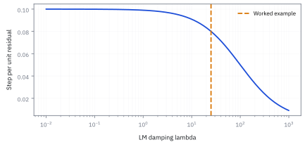
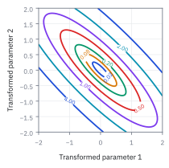
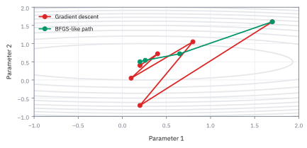
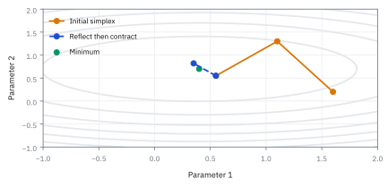
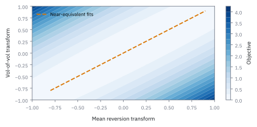

21.2 Multivariate Optimizers for Calibration
calibration คือการหาตัวเลขหลายตัวของแบบจำลองที่ทำให้ราคาจากแบบจำลองใกล้ราคาตลาดที่สุด วัดความใกล้ด้วยตัวเลขเดียว แล้วให้อัลกอริทึมเดินลงเขาอย่างมีเบรก และต้องถามทุกครั้งว่าข้อมูลบอกตัวเลขนั้นได้จริงหรือไม่
เช้านี้โต๊ะเห็น variance swap ห้าอายุ ตั้งแต่ 3 เดือนถึง 3 ปี แต่ละตัวมี bid กับ ask และต้องหา $v_0$, $\theta$, $\kappa$ ของแบบจำลอง Heston (14.7) ก่อนตลาดเปิด เพื่อ quote variance swap อายุ 10 ปีที่ลูกค้าขอ เด็กฝึกงานลองทุกชุดบนกริด 11 ค่าต่อตัว รวม 1,331 ชุด ได้ $(0.09,\ 0.04,\ 2)$ แล้ว quote 10 ปีที่ 20.62% เขาบอกว่าถ้าทำแบบเดียวกันกับ Heston ครบห้าตัวจะใช้ 161,051 ชุด มีวิธีที่เร็วกว่านี้ไหม และตัวเลข 20.62% เชื่อได้แค่ไหน?
ลองตอบก่อนเปิดเฉลย
Levenberg–Marquardt ใช้ 6 รอบ (แต่ละรอบคำนวณราคาห้าตัวกับความชันของมัน) ได้ความคลาดเคลื่อนรวม 0.1518 ดีกว่า 0.1685 ของกริด เพราะคำตอบจริงอยู่ระหว่างจุดของกริด: $v_0=0.0894$, $\theta=0.0394$, $\kappa=1.90$ และ 10 ปีเป็น 20.51% แต่ข้อมูลห้าจุดนี้บอก $\kappa$ ได้แค่ช่วงราว 1.41 ถึง 2.52 ทุกค่าในช่วงนั้นให้ราคาทั้งห้าอยู่ใน bid–ask ขณะที่ 10 ปีเลื่อนจาก 19.67% ถึง 21.13% ตัวเลขเดียวจึงเชื่อไม่ได้ ต้อง quote ด้วยส่วนต่างที่กว้างพอ หรือหา quote อายุยาวกว่านี้มาเพิ่ม
สิ่งที่เราจะสร้าง
12.7 หา implied volatility หนึ่งตัวจากราคาหนึ่งตัวด้วย gradient descent และ Newton งานจริงยากกว่านั้นสองชั้น: แบบจำลองมีตัวเลขหลายตัว และราคาตลาดมีมากกว่าจำนวนตัวเลข จึงไม่มีชุดไหนตรงทุกราคา ต้องนิยามก่อนว่า “ใกล้ที่สุด” แปลว่าอะไร แล้วหาชุดที่ใกล้ที่สุดตามนิยามนั้น
ทั้งหน้าใช้โจทย์เดียว: variance ที่คาดเฉลี่ยตลอดอายุของ 14.7 ซึ่งคือราคายุติธรรมของ variance swap ตาม 14.8 เราจะตั้ง objective จาก bid–ask ลอง grid search แล้วสร้าง Gauss–Newton กับ Levenberg–Marquardt เทียบกับ gradient descent, BFGS และ Nelder–Mead ดูว่าทำไมหน่วยของตัวแปรกับการแปลง log มีผลมาก และจบที่ร่องแบนซึ่งบอกว่าข้อมูลรู้อะไรไม่ได้
ศัพท์ที่ใช้ในหัวข้อนี้
- Calibration
- การเลือกตัวเลขของแบบจำลองให้ราคาจากแบบจำลองใกล้ราคาตลาดที่สุดตามนิยามที่ประกาศไว้ ใช้ทำทุกเช้าก่อนตั้งราคาสัญญาที่ตลาดไม่มีให้ดู ค่าที่ได้เป็นค่าที่ใช้ตั้งราคา ไม่ใช่ค่าสถิติจากข้อมูลย้อนหลัง
- Residual
- ราคาจากแบบจำลองลบราคากลางของตลาด หารด้วยครึ่งหนึ่งของส่วนต่าง bid–ask ใช้บอกทั้งทิศและขนาดของความพลาดของ quote หนึ่งตัวในหน่วยที่เทียบกันได้ทุกตัว ค่าไม่เกิน 1 แปลว่าราคาจากแบบจำลองอยู่ในช่วง bid–ask
- Objective function
- ตัวเลขเดียวที่รวมความพลาดของทุก quote ในหน้านี้คือครึ่งหนึ่งของผลรวมกำลังสองของ residual ใช้ให้อัลกอริทึมตัดสินได้เองว่าชุดไหนดีกว่า โดยไม่ต้องใช้สายตา
- Jacobian
- ตารางความชันของ residual ทุกตัวเทียบตัวเลขของแบบจำลองทุกตัว แถวละหนึ่ง quote คอลัมน์ละหนึ่งตัวเลข ใช้ทายว่าขยับตัวเลขเล็กน้อยแล้ว residual ทุกตัวจะเปลี่ยนเท่าไร
- Gauss–Newton
- วิธีที่แทน residual ด้วยเส้นตรงรอบจุดปัจจุบันแล้วกระโดดไปก้นของกำลังสองของเส้นตรงนั้น ใช้เมื่อ objective เป็นผลรวมกำลังสอง ลู่เข้าเร็วใกล้คำตอบ แต่ก้าวไกลเกินได้เมื่ออยู่ไกล
- Levenberg–Marquardt
- Gauss–Newton ที่เติมเบรก $\lambda$ ลงในระบบสมการ เบรกมากก้าวสั้นและชี้ลงเขา เบรกน้อยก้าวเหมือน Gauss–Newton ใช้เป็นเครื่องมือหลักของ calibration แบบกำลังสองน้อยที่สุด
- BFGS
- วิธีแบบ quasi-Newton ที่สะสมความโค้งของ objective จากความชันที่เปลี่ยนไปในแต่ละก้าว ใช้เมื่อมี gradient แต่ไม่มีอนุพันธ์อันดับสอง มีไว้เพราะ gradient descent เดินซิกแซ็กในหุบแคบ
สัญลักษณ์และหน่วย
| สัญลักษณ์ | ความหมาย | หน่วย |
|---|---|---|
| $T_i$ | อายุของ variance swap ตัวที่ $i$ ($i=1,\dots,5$) | ปี |
| $v_0,\ \theta,\ \kappa$ | variance วันนี้ ระดับระยะยาว และความเร็วของแรงดึงกลับ (14.7) | ต่อปี |
| $x$ | ตัวเลขที่ปรับ $(100v_0,\ 100\theta,\ \kappa)$ เช่น $v_0=0.07$ เขียนเป็น 7 | ไม่มีหน่วย, ไม่มีหน่วย, ต่อปี |
| $w(T)$ | variance เฉลี่ยที่คาดตลอดอายุ $T$ จากแบบจำลอง | ต่อปี |
| $m_i,\ h_i$ | ราคากลางและครึ่งส่วนต่าง bid–ask ของ quote ตัวที่ $i$ ในหน่วย variance | ต่อปี |
| $r_i,\ L$ | residual ในหน่วยครึ่งส่วนต่าง และ objective | ไม่มีหน่วย |
| $J,\ \delta$ | Jacobian ($5\times3$) และก้าวที่จะเดินของ $x$ | ตามหน่วยของ $x$ |
| $\lambda$ | เบรกของ Levenberg–Marquardt | ไม่มีหน่วยหลังปรับหน่วยของ $x$ |
| $H,\ s_k,\ y_k$ | ตัวประมาณ inverse Hessian ของ BFGS ก้าวที่เดิน และความชันที่เปลี่ยน | ตามหน่วยของ $x$ |
ขั้นที่ 1 — ของที่ตลาดให้: variance swap ห้าอายุ และสูตรของ 14.7
ต้องรู้ก่อนว่าจะ fit อะไรกับอะไร ฝั่งแบบจำลองคือ variance เฉลี่ยที่คาดตลอดอายุของ 14.7 ขั้นที่ 3 ซึ่ง 14.8 บอกว่าเป็นราคายุติธรรมของ variance swap พอดี ฝั่งตลาดคือ quote ห้าตัวในหน่วยจุดความผันผวน เราแปลง bid กับ ask เป็น variance ก่อน แล้วหาราคากลางกับครึ่งส่วนต่างในหน่วยนั้น
| อายุ (ปี) | bid (%) | ask (%) | $100m_i$ | $100h_i$ |
|---|---|---|---|---|
| 0.25 | 27.85 | 28.35 | 7.8967 | 0.1405 |
| 0.5 | 26.60 | 27.10 | 7.2099 | 0.13425 |
| 1 | 24.45 | 25.05 | 6.1265 | 0.1485 |
| 2 | 22.55 | 23.35 | 5.2686 | 0.1836 |
| 3 | 21.40 | 22.40 | 4.7986 | 0.2190 |
quote ชุดนี้เป็นตัวเลขสมมติ สร้างจากชุดตัวเลขของ 14.7 ($v_0=0.09$, $\theta=0.04$, $\kappa=2$ ซึ่งให้ 28.17%, 26.76%, 24.82%, 22.86% และ 21.98%) แล้วขยับราคากลางไปเล็กน้อยในแต่ละอายุแบบที่ตลาดจริงมีเสียงรบกวน คำตอบที่ได้จึงไม่ใช่ $(0.09,\ 0.04,\ 2)$ พอดี และเราจะดูว่าห่างเท่าไร
ทำไมใช้หน่วย variance แทนจุดความผันผวน: สัญญาจ่ายตาม variance และในหน่วยนี้ $w$ เป็นเส้นตรงใน $v_0$ กับ $\theta$ มีแค่ $\kappa$ ที่อยู่ในฟังก์ชันโค้ง ขั้นที่ 11 จะใช้ข้อนี้ ส่วนต่าง bid–ask ของอายุยาวกว้างกว่า เพราะซื้อขายน้อยกว่า
ขั้นที่ 2 — ตัวเลขเดียวที่บอกว่าใกล้แค่ไหน
อัลกอริทึมเทียบ “ใกล้กว่า” ได้ก็ต่อเมื่อความพลาดห้าตัวถูกรวมเป็นตัวเลขเดียว เราหาร residual ด้วยครึ่งส่วนต่าง เพราะ quote ที่ส่วนต่างกว้างคือ quote ที่ตลาดเองก็ไม่แน่ใจ แล้วรวมกำลังสอง การเลือกนี้มีเหตุผลรองรับ: ถ้าราคากลางคือราคาจากแบบจำลองบวกเสียงรบกวนปกติที่มีความผันผวน $h_i$ การทำ $L$ ให้เล็กที่สุดคือการหาชุดที่ทำให้ข้อมูลที่เห็นมีโอกาสเกิดสูงที่สุด
บรรทัดที่สามถึงห้าคือเหตุผลของกำลังสอง: density ปกติของ 1.9 ของแต่ละ quote มี $e^{-r_i^2/2}$ คูณกันห้าตัวแล้วใส่ลบ log ผลคูณกลายเป็นผลบวก ค่าคงที่ไม่ขึ้นกับ $x$ จึงไม่มีผลต่อคำตอบ residual ที่ไม่เกิน 1 แปลว่าราคาจากแบบจำลองอยู่ใน bid–ask ของ quote นั้น
จุดเริ่ม $x_0$ คือเดาว่า $v_0=0.07$, $\theta=0.05$, $\kappa=1$ ห้า residual คือ −8.022, −4.737, 0.927, 3.246 และ 3.812 จึงได้ $L=56.365$ ค่าติดลบที่อายุสั้นบอกว่า variance วันนี้ต่ำไป ค่าบวกที่อายุยาวบอกว่าระดับระยะยาวสูงไป
ขั้นที่ 3 — grid search: นับงานก่อนลงมือ
โจทย์ให้อะไรมาบ้าง: ลองทุกชุดบนกริด $v_0$ ตั้งแต่ 0.04 ถึง 0.14 ทีละ 0.01, $\theta$ ตั้งแต่ 0.02 ถึง 0.07 ทีละ 0.005 และ $\kappa$ ตั้งแต่ 0.5 ถึง 5.5 ทีละ 0.5 ตัวละ 11 ค่า แล้วเก็บชุดที่ $L$ ต่ำสุด
คำตอบ: กริดใช้ 1,331 ชุดแล้วได้ $(0.09,\ 0.04,\ 2)$ ข้อดีของมันคือไม่หลงหุบ เพราะดูทุกจุด แต่มีสองปัญหา คำตอบละเอียดได้เท่าช่องของกริดเท่านั้น (ขั้นที่ 7 จะได้ $L=0.1518$ ที่ $\kappa=1.90$ ซึ่งอยู่ระหว่างจุด) และงานคูณ 11 ทุกครั้งที่เพิ่มตัวแปร Heston ครบห้าตัวต้องตั้งราคาทั้งผืน 161,051 ครั้ง ถ้าแต่ละครั้งใช้ 0.1 วินาที (สมมติ) ก็ 4.5 ชั่วโมง
ตรวจเองใน 10 วินาที: $161{,}051\times0.1=16{,}105$ วินาที หารด้วย 3,600 ได้ 4.47 ชั่วโมง ส่วนชุด $(9,4,2)$ บังเอิญเป็นชุดที่ใช้สร้าง quote ในขั้นที่ 1 กริดจึงได้ค่าดี แต่ยังแพ้จุดที่อยู่ระหว่างช่อง
ขั้นที่ 4 — Gauss–Newton: แทน residual ด้วยเส้นตรง แล้วแก้ระบบ 3×3
แทนที่จะลองทุกจุด ให้ใช้ความชันบอกทาง residual แต่ละตัวเป็นฟังก์ชันโค้งของ $x$ แต่ใกล้จุดปัจจุบันมันเกือบเป็นเส้นตรง (Taylor อันดับหนึ่ง) ถ้าแทนด้วยเส้นตรง $L$ จะกลายเป็นกำลังสองของเส้นตรง ซึ่งหาก้นได้ด้วยสมการเชิงเส้น นี่คือที่มาของก้าว Gauss–Newton
บรรทัดที่สามคืออนุพันธ์ของกำลังสองตาม chain rule: $J^{\top}$ คูณเวกเตอร์ข้างใน ตั้งเป็นศูนย์แล้วได้ระบบ $3\times3$ ซึ่งคือ normal equations ของ 15.1 พอดี ก้าว Gauss–Newton จึงคือการ regress $-r$ บนคอลัมน์ของ $J$
$J^{\top}r$ คือ gradient ของ $L$ จริง ส่วน $J^{\top}J$ คือ Hessian ของ 12.3 ที่ทิ้งพจน์ $\sum r_i\nabla^2r_i$ ซึ่งเล็กเมื่อ residual เล็ก
สามบรรทัดล่างคือคอลัมน์ของ $J$ ก่อนหารด้วย $h_i$: สองคอลัมน์แรกได้จากสูตรเส้นตรงของ $w$ ทันที คอลัมน์ของ $\kappa$ ใช้กฎผลหารกับ $g(z)=(1-e^{-z})/z$ ได้ $\big(ze^{-z}-(1-e^{-z})\big)/z^2$ แล้วคูณ $T$ ตาม chain rule สังเกตว่าถ้า $v_0=\theta$ คอลัมน์นี้เป็นศูนย์ทั้งคอลัมน์ เพราะเส้นแบนแล้ว $\kappa$ ไม่มีผลอะไรเลย
ขั้นที่ 5 — ก้าวแรกด้วยตัวเลข และก้าวที่สองที่แย่ลง
โจทย์ให้อะไรมาบ้าง: จุดเริ่ม $x_0=(7,5,1)$ ของขั้นที่ 2 ใช้หน่วย $(100v_0,\ 100\theta,\ \kappa)$ ให้ตัวเลขทั้งสามมีขนาดใกล้กัน (ขั้นที่ 10 จะบอกว่าทำไม) แถวแรกของ $J$ คือ $g(0.25)/(100h_1)=0.884797/0.1405=6.2975$ และ $0.8200$ และ $-1.5088$ ห้าแถวรวมกันเป็น $J^{\top}J$ กับ $J^{\top}r$
คำตอบ: ก้าวแรกลด $L$ จาก 56.37 เหลือ 10.17 ยก $v_0$ ขึ้นและ $\theta$ ลงตามที่ residual บอก แต่ดัน $\kappa$ จาก 1 ไป 3.10 เกินไปมาก เดินต่ออีกก้าวได้ $x_2=(8.725,\ 4.056,\ 1.218)$ และ $L=20.01$ แย่ลงกว่าเดิม เพราะเส้นตรงที่วัดที่ $\kappa=3.1$ ทายผิดไกล ก้าวต่อจากนั้นให้ 1.635, 0.15184 และ 0.1518391 ครั้งนี้ลู่เข้าได้ แต่ไม่มีอะไรรับประกันว่า $L$ จะลดทุกก้าว
ตรวจเองใน 10 วินาที: แทน $\delta$ ในแถวแรก: $99.77(1.835)+36.80(-0.372)-51.55(2.099)=183.1-13.7-108.2=61.2$ เท่ากับ $-(-61.18)$ ตามต้องการ
ขั้นที่ 6 — Levenberg–Marquardt: ใส่เบรกที่ปรับเองได้
ปัญหาของขั้นที่ 5 คือเราเชื่อเส้นตรงไกลเกินกว่าที่มันแม่น วิธีแก้คือลงโทษก้าวยาวในแบบจำลองเส้นตรง โดยบวก $\tfrac12\lambda\delta^{\top}\delta$ เข้าไปก่อนหาก้น แล้วปรับ $\lambda$ ตามผลจริง: ก้าวที่ทำให้ $L$ ลดได้ ลดเบรกลงสิบเท่า ก้าวที่ทำให้ $L$ เพิ่ม ไม่รับ และเพิ่มเบรกสิบเท่า
บรรทัดที่สามคือระบบเดิมที่บวก $\lambda$ บนเส้นทแยง เมื่อ $\lambda$ ใหญ่ ก้าวคือทิศลงเขาของ gradient descent (12.7) ที่สั้นลงตาม $1/\lambda$ เมื่อ $\lambda$ เล็ก ก้าวคือ Gauss–Newton เบรกตัวเดียวจึงเลื่อนระหว่างสองวิธี และ $\lambda I$ ยังทำให้ระบบแก้ได้เสมอแม้คอลัมน์ของ $J$ จะเกือบซ้ำกัน (7.5)
บรรทัดสุดท้ายคือของเล่นที่อ่าน Figure 21.2a ได้: ถ้าตัวเลขแต่ละตัวขยับ residual ของตัวเองสิบเท่าและไม่กระทบตัวอื่น ($J=10I$) ก้าวต่อ residual หนึ่งหน่วยคือ $10/(100+\lambda)$ ที่ $\lambda=0$ ได้ 0.1 ซึ่งลบ residual ทิ้งหมด ที่ $\lambda=25$ ได้ 0.08 และ residual เหลือ $25/125=0.2$ เท่าเดิม ที่ $\lambda=1{,}000$ ได้ 0.0091 และเหลือ 0.909 เท่า
Figure 21.2a — เบรกยิ่งมาก ก้าวยิ่งสั้น

ขั้นที่ 7 — เดิน Levenberg–Marquardt จากจุดเริ่มเดิม
โจทย์ให้อะไรมาบ้าง: จุดเริ่มเดิม $(7,5,1)$ เบรกเริ่ม $\lambda=1$ ลดสิบเท่าเมื่อก้าวทำให้ $L$ ลด และเพิ่มสิบเท่าเมื่อไม่ลด หยุดเมื่อ $L$ ลดน้อยกว่า $10^{-12}$
| รอบ | $\lambda$ | $x$ | $L$ |
|---|---|---|---|
| 0 | 1 | (7, 5, 1) | 56.365 |
| 1 | 0.1 | (8.611, 4.009, 2.255) | 11.837 |
| 2 | 0.01 | (8.920, 3.967, 1.848) | 0.2932 |
| 3 | 0.001 | (8.936, 3.946, 1.903) | 0.151851 |
| 4 | 0.0001 | (8.936, 3.944, 1.902) | 0.1518391 |
คำตอบ: ทุกก้าวทำให้ $L$ ลด ไม่มีก้าวไหนถูกปฏิเสธ รอบที่ 6 ยืนยันว่าไม่ลดต่อ คำตอบคือ $v_0=0.089360$, $\theta=0.039445$, $\kappa=1.9019$ ที่ $L=0.151839$ residual ห้าตัวคือ 0.144, −0.332, 0.341, −0.224 และ 0.081 อยู่ใน bid–ask ทุกตัว ก้าวแรกที่ $\lambda=1$ คือ $(1.611,\ -0.991,\ 1.255)$ สั้นกว่าก้าว Gauss–Newton $(1.835,\ -0.372,\ 2.099)$ โดยเฉพาะใน $\kappa$
ตรวจเองใน 10 วินาที: ที่คำตอบ gradient $J^{\top}r$ ต้องเป็นศูนย์ โค้ดได้ขนาดราว $3\times10^{-8}$ และ $L$ ที่ต่ำกว่า 0.1685 ของกริดคือหลักฐานว่าคำตอบอยู่ระหว่างจุดของกริด อย่าเทียบกับ $(0.09,\ 0.04,\ 2)$ ที่ใช้สร้างข้อมูล เพราะเสียงรบกวนในราคากลางย้ายคำตอบไปแล้ว
ขั้นที่ 8 — ทำไม gradient descent ช้า และ BFGS เรียนความโค้งได้อย่างไร
gradient descent ของ 12.7 ใช้แค่ทิศลงเขา ไม่รู้ว่าแต่ละทิศโค้งแค่ไหน ความเร็วของมันจึงขึ้นกับอัตราส่วนระหว่างความโค้งมากสุดกับน้อยสุดของหุบ ซึ่งอ่านได้จาก eigenvalue ของ $J^{\top}J$ (7.6) ที่คำตอบ BFGS แก้ปัญหานี้โดยจำว่าความชันเปลี่ยนไปเท่าไรเมื่อเดินไปเท่าไร แล้วสร้างตัวประมาณของ inverse Hessian ที่ต้องทำตามเงื่อนไข secant
ใน 12.7 gradient descent ที่ขนาดก้าวดีที่สุดคูณความคลาดเคลื่อนในทิศที่แบนที่สุดด้วย $(c-1)/(c+1)$ ทุกก้าว ที่นี่ 0.9802 ต้องใช้ราว 691 ก้าวเพื่อลดความคลาดเคลื่อนในทิศนั้นลงล้านเท่า การเดินจริงจาก $x_0$ ด้วยขนาดก้าว $2/(178.93+1.788)=0.01107$ ใช้ 260 ก้าวกว่า $L$ จะห่างจากต่ำสุดไม่ถึง $10^{-6}$
ตรวจเงื่อนไข secant ของสูตร BFGS ได้ในบรรทัดเดียว: $(I-\rho y_ks_k^{\top})y_k=y_k-\rho y_k(s_k^{\top}y_k)=0$ พจน์แรกจึงหายเมื่อคูณ $y_k$ ส่วน $\rho s_ks_k^{\top}y_k=s_k$ พอดี ในการรันจริงก้าวแรกมี $s_0=(0.956,\ -0.158,\ -0.027)$ และ $y_0=(92.36,\ 31.41,\ -72.42)$ โค้ดตรวจว่า $H_1y_0$ ออกมาเท่ากับ $s_0$ ทุกหลัก สูตรนี้ยังรักษาให้ $H$ เป็น positive definite ตราบที่ $y_k^{\top}s_k\gt0$ ทิศ $-H\nabla L$ จึงลงเขาเสมอ
ผล: BFGS จาก $x_0$ ใช้ 16 รอบ (คำนวณ $L$ ทั้งหมด 31 ครั้ง รวมการลดขนาดก้าวเมื่อก้าวเต็มไม่ผ่าน) จนขนาด gradient ต่ำกว่า $10^{-7}$ และได้คำตอบเดียวกับขั้นที่ 7 ถึงทศนิยมตำแหน่งที่เจ็ด Levenberg–Marquardt เร็วกว่าเพราะใช้โครงสร้างผลรวมกำลังสองโดยตรง ส่วน BFGS ใช้ได้กับ objective ทุกแบบที่มี gradient
Figure 21.2b — หุบแคบยาวทำให้ทิศลงเขาไม่ชี้ไปที่ก้นหุบ

Figure 21.2c — ภาพวาดของเส้นทางซิกแซ็กเทียบเส้นทางที่ใช้ความโค้ง

ขั้นที่ 9 — Nelder–Mead: ใช้แค่การเทียบว่าจุดไหนดีกว่า
โจทย์ให้อะไรมาบ้าง: บางครั้งไม่มี gradient ที่เชื่อได้ เช่นราคามาจากการจำลองที่มีเสียงรบกวน Nelder–Mead ใช้แค่ค่าของ $L$: ถือรูปสามเหลี่ยม (ในสามมิติคือจุดสี่จุด) สะท้อนจุดที่แย่ที่สุดผ่านจุดศูนย์กลางของจุดที่เหลือ ถ้าดีมากให้ยืดต่อ ถ้าไม่ดีให้หดเข้า ลองกับสามเหลี่ยมใน Figure 21.2d บน $Z=(X-0.4)^2+4(Y-0.7)^2$ ที่มุม $(1.6,\ 0.2)$, $(1.1,\ 1.3)$ และ $(0.55,\ 0.55)$
คำตอบ: จุดสะท้อนแย่กว่าจุดที่แย่ที่สุดเดิม ($3.7325\gt2.44$) กติกาจึงให้หดเข้าด้านในครึ่งทางระหว่างจุดศูนย์กลางกับจุดแย่ ได้ $(1.2125,\ 0.5625)$ ที่ $Z=0.7358$ ซึ่งดีกว่า 2.44 จึงแทนที่มุมเดิม สามเหลี่ยมใหม่คือ $(0.55,\ 0.55)$, $(1.1,\ 1.3)$ และ $(1.2125,\ 0.5625)$ บนโจทย์ variance swap Nelder–Mead จาก $x_0$ (ก้าวเริ่ม 1, 1 และ 0.5) ใช้การคำนวณ $L$ 173 ครั้งจนสี่มุมต่างกันไม่ถึง $10^{-10}$ และได้คำตอบเดียวกับขั้นที่ 7 ถึงทศนิยมที่สี่ของ $\kappa$
ตรวจเองใน 10 วินาที: $(0.05-0.4)^2+4(1.65-0.7)^2=0.1225+3.61=3.7325$ และ $(1.2125-0.4)^2+4(0.5625-0.7)^2=0.6602+0.0756=0.7358$ ข้อดีคือไม่ต้องมีอนุพันธ์ ข้อเสียคือช้าเมื่อตัวแปรมากขึ้น และไม่มีหลักประกันว่าจะถึงจุดต่ำสุด
Figure 21.2d — สามเหลี่ยมของ Nelder–Mead

ขั้นที่ 10 — หน่วยของตัวแปรกับการแปลง log
โจทย์ให้อะไรมาบ้าง: ถ้าใช้ $v_0$, $\theta$ ในหน่วยเดิม (0.07 แทน 7) คอลัมน์ของ $J$ ใหญ่ขึ้นร้อยเท่า และ eigenvalue ของ $J^{\top}J$ ที่คำตอบเปลี่ยนไป อีกเรื่องคือ $\kappa$ ต้องเป็นบวก ลองเริ่มจากชุดที่รูปผิดทาง $(5,\ 8,\ 0.5)$ ซึ่งเดาว่า variance วันนี้ต่ำกว่าระยะยาว และจากชุดที่ $\kappa$ เร็วเกิน $(9,\ 4,\ 6)$
| จุดเริ่ม | ตัวแปรที่สาม | รอบ | ถูกปฏิเสธ | $L$ สุดท้าย |
|---|---|---|---|---|
| (5, 8, 0.5) | $\kappa$ | 100 | 58 | 129.84 ($\kappa\approx0$) |
| (5, 8, 0.5) | $\ln\kappa$ | 15 | 5 | 0.151839 |
| (9, 4, 6) | $\kappa$ | 10 | 2 | 0.151839 |
| (9, 4, 6) | $\ln\kappa$ | 6 | 0 | 0.151839 |
คำตอบ: ในหน่วยเดิม eigenvalue คือ 1,015,511, 188,370 และ 3.19 อัตราส่วน 318,091 แทน 100.1 ตัวคูณต่อก้าวในทิศที่แบนที่สุดเป็น 0.9999937 ต้องใช้ราว 2.2 ล้านก้าวเพื่อลดความคลาดเคลื่อนล้านเท่า เทียบกับ 691 ก้าว คณิตศาสตร์เหมือนเดิมทุกอย่าง ต่างแค่หน่วย
เรื่องเครื่องหมาย: ก้าว Gauss–Newton จาก $(9,4,6)$ ได้ $\kappa=-4.21$ คือ variance ที่วิ่งหนีออกจากระดับระยะยาว Levenberg–Marquardt ที่ปฏิเสธก้าวที่ออกนอกเขตจะคลานชนขอบ: จาก $(5,8,0.5)$ มันติดอยู่ที่ $\kappa\approx0$ หลัง 100 รอบ ถ้าให้อัลกอริทึมเดินใน $\ln\kappa$ แทน $\kappa$ จะเป็นบวกเสมอโดยไม่ต้องมีขอบ และถึงคำตอบใน 15 รอบ
ตรวจเองใน 10 วินาที: $(318{,}091-1)/(318{,}091+1)=1-2/318{,}092=0.9999937$ กฎทั่วไปคือปรับหน่วยให้คอลัมน์ของ $J$ มีขนาดใกล้กัน และใช้ $\ln$ กับตัวเลขที่ต้องเป็นบวก (ส่วน correlation ที่อยู่ระหว่าง −1 กับ 1 ใช้ฟังก์ชันที่พาเส้นจำนวนทั้งเส้นเข้าช่วงนั้น เช่น $\tanh$)
ขั้นที่ 11 — ร่องแบน: ข้อมูลบอก $\kappa$ ได้แค่ช่วงหนึ่ง
โจทย์ให้อะไรมาบ้าง: ใช้ข้อสังเกตของขั้นที่ 1: ถ้าตรึง $\kappa$ ไว้ $w$ เป็นเส้นตรงใน $v_0$ กับ $\theta$ จึงหาคู่ที่ดีที่สุดได้ด้วย least squares $2\times2$ ของ 15.1 ทันที ทำแบบนี้ทีละค่าของ $\kappa$ (profile) แล้วดูว่า $L$ ขึ้นเร็วแค่ไหน เกณฑ์ช่วงที่ใช้คือ $L$ ไม่เกินค่าต่ำสุดบวก 0.5 ซึ่งเทียบเท่าหนึ่ง standard error เมื่อเสียงรบกวนเป็นปกติตามขั้นที่ 2 แล้วคำนวณ variance swap อายุ 10 ปีที่ยังไม่มี quote
| $\kappa$ | $v_0$ | $\theta$ | $L$ | $\max\lvert r_i\rvert$ | 10 ปี (%) |
|---|---|---|---|---|---|
| 1.41 | 0.0866 | 0.0350 | 0.633 | 0.94 | 19.67 |
| 1.5 | 0.0871 | 0.0361 | 0.461 | 0.82 | 19.86 |
| 1.90 | 0.0894 | 0.0394 | 0.152 | 0.34 | 20.51 |
| 2.5 | 0.0926 | 0.0426 | 0.616 | 0.70 | 21.12 |
| 2.52 | 0.0928 | 0.0427 | 0.644 | 0.71 | 21.13 |
คำตอบ: $\kappa$ ตั้งแต่ 1.41 ถึง 2.52 อยู่ในเกณฑ์ และทุกแถวยังมี residual ไม่เกิน 1 คือ fit ผ่าน bid–ask ทั้งห้า quote แต่ variance swap 10 ปีเลื่อนจาก 19.67% ถึง 21.13% ต่างกัน 1.46 จุด เมื่อ $\kappa$ ขึ้น $v_0$ กับ $\theta$ ขึ้นตามเพื่อชดเชย ราคาห้าจุดจึงแทบเท่าเดิม นี่คือร่องแบนในภาพ Figure 21.2e
ตรวจเองใน 10 วินาที: ชุดที่ใช้สร้าง quote คือ $\kappa=2$ ให้ 10 ปีที่ 20.62% ซึ่งอยู่ในช่วงนี้ แต่ใครก็บอกไม่ได้จากห้าราคานี้ว่ามันคือ 2 ไม่ใช่ 1.5 หรือ 2.5 ในตลาดจริงเราไม่มีชุดจริงให้เทียบเลย
Figure 21.2e — สองตัวเลขชดเชยกันจนก้นหุบกลายเป็นร่องยาว

คำถามที่ควรถามออกมาดัง ๆ
ทำไมไม่เชื่อแต่ละ quote ตรง ๆ แล้วลากเส้นต่อไปถึง 10 ปี? ห้า quote ให้ห้าตัวเลข แต่ไม่บอกว่าเลยสามปีไปแล้วเส้นจะเดินอย่างไร แบบจำลองผูกทั้งเส้นด้วยสามตัวเลข จึงลากต่อได้อย่างมีเหตุผล และขั้นที่ 11 บอกด้วยว่าการลากนั้นไม่แน่นอนแค่ไหน
ถ้าอัลกอริทึมสามแบบได้คำตอบเดียวกัน แปลว่าคำตอบถูกใช่ไหม? แปลว่าหาก้นของ $L$ ได้ถูก ไม่ได้แปลว่าข้อมูลบอก $\kappa$ ได้ชัด Levenberg–Marquardt, BFGS และ Nelder–Mead ได้ $\kappa=1.9019$ ตรงกัน แต่ช่วงที่ข้อมูลยอมรับคือ 1.41 ถึง 2.52
ความผิดที่ให้ตัวเลขผิดโดยไม่มีอะไรเตือน
เชื่อตัวเลขจาก fit ครั้งเดียว: $\kappa=1.90$ ดูแม่นถึงทศนิยมสี่ตำแหน่ง แต่ 1.41 และ 2.52 ก็ผ่าน bid–ask ทุกตัว variance swap 10 ปีที่ quote จากค่าเดียวอาจพลาด 0.8 จุดโดยไม่มีอะไรเตือน ต้องรายงานช่วงด้วยเสมอ
ใช้ Gauss–Newton ไม่มีเบรก: จาก $(9,4,6)$ ก้าวเดียวได้ $\kappa=-4.21$ และจาก $x_0$ ก้าวที่สองทำให้ $L$ ขึ้นจาก 10.17 เป็น 20.01 ระบบที่รันเองทุกเช้าต้องตรวจทุกก้าวว่า $L$ ลดจริงก่อนรับ
ไม่ปรับหน่วย: อัตราส่วนความโค้ง 318,091 แทน 100.1 ทำให้วิธีที่ใช้แค่ gradient ช้าลงราวสามพันเท่า และทำให้เกณฑ์หยุดแบบ “ก้าวเล็กกว่า $10^{-6}$” หยุดเร็วเกินในตัวแปรที่มีหน่วยเล็ก
ใช้ขอบแทนการแปลง: ปฏิเสธก้าวที่ทำให้ $\kappa$ ติดลบฟังดูปลอดภัย แต่จากจุดเริ่มที่รูปผิดทาง อัลกอริทึมคลานชนขอบ 100 รอบแล้วหยุดที่ $L=129.84$ แปลงเป็น $\ln\kappa$ แล้วได้ 0.151839 ใน 15 รอบ
ใช้ทำอะไรบนโต๊ะจริง
โต๊ะ option ปรับแบบจำลองทุกเช้าด้วยโครงเดียวกับหน้านี้: objective ที่ถ่วงด้วย bid–ask, Levenberg–Marquardt เป็นเครื่องหลักเพราะ objective เป็นผลรวมกำลังสอง เริ่มจากคำตอบของเมื่อวาน ปรับหน่วยและแปลงตัวเลขที่มีขอบ แล้วตรวจก่อนใช้ว่า residual อยู่ใน bid–ask และ gradient ใกล้ศูนย์ Nelder–Mead ใช้เป็นตัวตรวจอีกทางเมื่อสงสัยว่า gradient ผิด
Heston เต็มห้าตัวมักปรับเป็นสองชั้น: $v_0$, $\theta$, $\kappa$ จาก variance swap หรือ option ATM หลายอายุแบบหน้านี้ แล้ว $\xi$ กับ $\rho$ จากความโค้งและความเอียงของ smile (14.7) ซึ่งต้องใช้เครื่องตั้งราคา option ที่เร็วพอให้อัลกอริทึมเรียกหลายร้อยครั้ง 21.3 สร้างเครื่องนั้น
สามโจทย์ตรวจความเข้าใจ
1. ที่ชุด $(0.09,\ 0.04,\ 2)$ ซึ่งใช้สร้าง quote หา residual ของอายุ 3 เดือน (ใช้ $g(0.5)=0.786939$) และบอกว่าทำไม $L$ ที่ชุดนี้ (0.1685) สูงกว่าคำตอบของขั้นที่ 7
เฉลย
$w(0.25)=0.04+0.05(0.786939)=0.0793469$ ลบ $m_1=0.0789673$ ได้ 0.0003797 หารด้วย $h_1=0.001405$ ได้ $r_1=0.270$ ชุดที่ใช้สร้างข้อมูลไม่ใช่ชุดที่ fit ข้อมูลที่มีเสียงรบกวนได้ดีที่สุด เพราะราคากลางถูกขยับไปแล้ว คำตอบของขั้นที่ 7 จึงได้ $L$ ต่ำกว่า (0.1518)
2. ของเล่น $J=10I$ มี residual $(-0.5,\ 1,\ -0.2)$ และ $\lambda=25$ หาก้าว residual ใหม่ และ $L$ ก่อนกับหลัง
เฉลย
$(100+25)\delta=-10r$ จึง $\delta=-0.08r=(0.04,\ -0.08,\ 0.016)$ residual ใหม่ $r+10\delta=0.2r=(-0.1,\ 0.2,\ -0.04)$ ส่วน $L$ จาก $\tfrac12(0.25+1+0.04)=0.645$ เหลือ $\tfrac12(0.01+0.04+0.0016)=0.0258$ ลดลง 25 เท่า เพราะ residual เหลือหนึ่งในห้าและ $L$ เป็นกำลังสอง
3. Heston ห้าตัวบนกริด 7 ค่าต่อตัวต้องตั้งราคากี่ครั้ง ถ้าใช้ Levenberg–Marquardt 10 รอบ และหา $J$ ด้วยผลต่างไปข้างหน้า (ขยับทีละตัว) ต้องตั้งราคากี่ครั้ง?
เฉลย
กริด $7^5=16{,}807$ ครั้ง Levenberg–Marquardt ต้องการราคาที่จุดปัจจุบันหนึ่งครั้ง บวกหนึ่งครั้งต่อตัวแปรเพื่อทำคอลัมน์ของ $J$ รวม 6 ครั้งต่อรอบ 10 รอบจึงเป็น 60 ครั้ง (บวกครั้งที่ถูกปฏิเสธถ้ามี) น้อยกว่าราว 280 เท่า
คำนวณซ้ำด้วย JavaScript
รันใน Node.js ได้โดยไม่ติดตั้งแพ็กเกจ โค้ดนี้ตรวจ quote และตัวเลขที่ป้อนก่อนคำนวณ แปลง quote เป็น variance คำนวณ residual และ Jacobian จากสูตร ทำ grid search, Gauss–Newton, Levenberg–Marquardt, gradient descent, BFGS และ Nelder–Mead เทียบหน่วยและการแปลง log หาช่วงของ $\kappa$ ด้วย profile แล้วพิมพ์ทุกตัวเลขเป็น JSON บรรทัดเดียว
// Calibrating Heston's variance term structure (14.7) to five variance-swap quotes:
// weighted residuals, grid search, Gauss-Newton, Levenberg-Marquardt, gradient descent, BFGS,
// Nelder-Mead, scaling and a log transform, and the flat valley along kappa.
// Local names for the Math functions: shorter to read, and fast in any sandbox.
const { abs, exp, expm1, log, sqrt, hypot, max, min } = Math;
const T = [0.25, 0.5, 1, 2, 3];
const bid = [27.85, 26.60, 24.45, 22.55, 21.40], ask = [28.35, 27.10, 25.05, 23.35, 22.40];
function checkQuotes(bidVol, askVol) {
if (bidVol.length !== T.length || askVol.length !== T.length) throw new RangeError('Need one bid and one ask per maturity');
bidVol.forEach((b, i) => {
if (!(Number.isFinite(b) && Number.isFinite(askVol[i]))) throw new TypeError('Quotes must be finite numbers');
if (!(b > 0 && askVol[i] > b)) throw new RangeError('Each quote needs 0 < bid < ask (vol points)');
});
}
checkQuotes(bid, ask);
// Step 1: quotes in vol points become variance; mid and half-spread in variance units.
const wBid = bid.map(v => (v / 100) ** 2), wAsk = ask.map(v => (v / 100) ** 2);
const mid = wBid.map((b, i) => (b + wAsk[i]) / 2), half = wBid.map((b, i) => (wAsk[i] - b) / 2);
// The model of 14.7: expected average variance. Parameters x = (100 v0, 100 theta, kappa).
// expm1 and a short series keep full precision when kappa * T is tiny (a run can drift towards kappa = 0).
const g = z => (z === 0 ? 1 : -expm1(-z) / z);
const gPrime = z => (abs(z) < 1e-3 ? -0.5 + z / 3 - z * z / 8 : (exp(-z) * (1 + z) - 1) / (z * z));
function checkParams(x) {
if (!Array.isArray(x) || x.length !== 3 || !x.every(Number.isFinite)) throw new TypeError('Parameters must be three finite numbers');
if (!(x[0] > 0 && x[1] > 0 && x[2] > 0)) throw new RangeError('v0, theta and kappa must be positive');
}
const model = (x, t) => (x[1] + (x[0] - x[1]) * g(x[2] * t)) / 100;
// Step 2: residuals in half-spreads and the objective L = sum(r^2) / 2.
function residuals(x) { checkParams(x); return T.map((t, i) => (model(x, t) - mid[i]) / half[i]); }
const objective = x => 0.5 * residuals(x).reduce((s, r) => s + r * r, 0);
// Step 4: the Jacobian from the formula (d/dv0 = g, d/dtheta = 1 - g, d/dkappa = (v0 - theta) T g').
const jacobian = x => T.map((t, i) => [g(x[2] * t) / 100 / half[i], (1 - g(x[2] * t)) / 100 / half[i],
(x[0] - x[1]) / 100 * t * gPrime(x[2] * t) / half[i]]);
function normalEquations(x) {
const J = jacobian(x), r = residuals(x), A = [[0, 0, 0], [0, 0, 0], [0, 0, 0]], grad = [0, 0, 0];
J.forEach((row, i) => { for (let a = 0; a < 3; a++) { grad[a] += row[a] * r[i]; for (let b = 0; b < 3; b++) A[a][b] += row[a] * row[b]; } });
return {J, r, A, grad};
}
// Gaussian elimination with row swaps for the small systems.
function solve(A, b) {
const n = b.length, M = A.map((row, i) => [...row, b[i]]);
for (let c = 0; c < n; c++) {
let p = c;
for (let r = c + 1; r < n; r++) if (abs(M[r][c]) > abs(M[p][c])) p = r;
[M[c], M[p]] = [M[p], M[c]];
if (abs(M[c][c]) < 1e-300) throw new RangeError('Singular system: a parameter has no effect on the quotes');
for (let r = c + 1; r < n; r++) { const f = M[r][c] / M[c][c]; for (let k = c; k <= n; k++) M[r][k] -= f * M[c][k]; }
}
const x = new Array(n).fill(0);
for (let r = n - 1; r >= 0; r--) { let s = M[r][n]; for (let k = r + 1; k < n; k++) s -= M[r][k] * x[k]; x[r] = s / M[r][r]; }
return x;
}
const valid = x => x[0] > 0 && x[1] > 0 && x[2] > 0;
const x0 = [7, 5, 1];
// Step 3: brute-force grid, 11 values per parameter.
function gridSearch() {
let best = {L: Infinity}, count = 0;
for (let a = 0; a <= 10; a++) for (let b = 0; b <= 10; b++) for (let c = 0; c <= 10; c++) {
const x = [4 + a, 2 + 0.5 * b, 0.5 + 0.5 * c], L = objective(x); count++;
if (L < best.L) best = {x, L};
}
return {...best, count};
}
// Step 5: plain Gauss-Newton steps (no brake).
function gaussNewton(x, steps) {
const path = [{x, L: objective(x)}];
for (let k = 0; k < steps; k++) {
const {A, grad} = normalEquations(x), d = solve(A, grad.map(v => -v)), xn = x.map((v, i) => v + d[i]);
if (!valid(xn)) { path.push({x: xn, L: null}); break; }
x = xn; path.push({x, L: objective(x)});
}
return path;
}
// Steps 6, 7 and 10: Levenberg-Marquardt, lambda / 10 after a good step, x 10 after a bad one.
// With logKappa the third coordinate is ln(kappa), so kappa stays positive by construction.
function levenbergMarquardt(start, logKappa = false, maxIter = 200) {
const toX = y => [y[0], y[1], logKappa ? exp(y[2]) : y[2]];
let y = logKappa ? [start[0], start[1], log(start[2])] : start.slice(), lambda = 1, rejects = 0;
const path = [];
for (let k = 0; k < maxIter; k++) {
const x = toX(y), {J, r} = normalEquations(x), L = objective(x);
const Jy = J.map(row => [row[0], row[1], logKappa ? row[2] * x[2] : row[2]]);
const A = [[0, 0, 0], [0, 0, 0], [0, 0, 0]], grad = [0, 0, 0];
Jy.forEach((row, i) => { for (let a = 0; a < 3; a++) { grad[a] += row[a] * r[i]; for (let b = 0; b < 3; b++) A[a][b] += row[a] * row[b]; } });
const d = solve(A.map((row, i) => row.map((v, j) => v + (i === j ? lambda : 0))), grad.map(v => -v));
const yn = y.map((v, i) => v + d[i]), xn = toX(yn), Ln = valid(xn) ? objective(xn) : Infinity;
path.push({x, L, lambda, accepted: Ln < L});
if (Ln < L) { y = yn; lambda /= 10; if (L - Ln < 1e-12) break; } else { lambda *= 10; rejects++; }
}
const x = toX(y);
return {x, L: objective(x), iterations: path.length, rejects, path};
}
// Step 8: eigenvalues of a symmetric 3x3 matrix by Jacobi rotations (for the condition number).
function eigenvalues(S) {
const M = S.map(row => row.slice());
for (let sweep = 0; sweep < 60; sweep++) for (let p = 0; p < 2; p++) for (let q = p + 1; q < 3; q++) {
if (abs(M[p][q]) < 1e-300) continue;
const th = (M[q][q] - M[p][p]) / (2 * M[p][q]), t = (th >= 0 ? 1 : -1) / (abs(th) + sqrt(th * th + 1));
const c = 1 / sqrt(t * t + 1), s = t * c;
for (let k = 0; k < 3; k++) { const a = M[k][p], b = M[k][q]; M[k][p] = c * a - s * b; M[k][q] = s * a + c * b; }
for (let k = 0; k < 3; k++) { const a = M[p][k], b = M[q][k]; M[p][k] = c * a - s * b; M[q][k] = s * a + c * b; }
}
return [M[0][0], M[1][1], M[2][2]].sort((a, b) => b - a);
}
// Step 8: gradient descent with the best fixed step for this curvature, counted to within 1e-6 of the minimum.
function gradientDescent(start, eta, target) {
let x = start.slice(), k = 0;
while (objective(x) - target > 1e-6 && k < 100000) { const {grad} = normalEquations(x); x = x.map((v, i) => v - eta * grad[i]); k++; }
return {x, L: objective(x), iterations: k};
}
// Step 8: BFGS with a backtracking line search; returns the first secant check as well.
function bfgs(start) {
let x = start.slice(), H = [[1, 0, 0], [0, 1, 0], [0, 0, 1]], grad = normalEquations(x).grad, evaluations = 1, iterations = 0, secant = null;
const mul = (P, Q) => P.map(row => Q[0].map((_, j) => row.reduce((s, v, k) => s + v * Q[k][j], 0)));
while (hypot(...grad) > 1e-7 && iterations < 200) {
const d = H.map(row => -row.reduce((s, v, j) => s + v * grad[j], 0)), slope = d.reduce((s, v, i) => s + v * grad[i], 0), L0 = objective(x);
let t = 1, xn = x.map((v, i) => v + d[i]); evaluations++;
while (!(valid(xn) && objective(xn) <= L0 + 1e-4 * t * slope)) {
t /= 2; xn = x.map((v, i) => v + t * d[i]); evaluations++;
if (t < 1e-12) throw new RangeError('Line search failed: the direction does not go downhill');
}
const gn = normalEquations(xn).grad, s = xn.map((v, i) => v - x[i]), yv = gn.map((v, i) => v - grad[i]);
const sy = s.reduce((a, v, i) => a + v * yv[i], 0), I = [[1, 0, 0], [0, 1, 0], [0, 0, 1]];
if (sy > 1e-12 * hypot(...s) * hypot(...yv)) { // curvature along the step must be positive, else keep the old H
const rho = 1 / sy;
const left = I.map((row, i) => row.map((v, j) => v - rho * s[i] * yv[j])), right = I.map((row, i) => row.map((v, j) => v - rho * yv[i] * s[j]));
H = mul(mul(left, H), right).map((row, i) => row.map((v, j) => v + rho * s[i] * s[j]));
if (!secant) secant = {s, y: yv, Hy: H.map(row => row.reduce((a, v, j) => a + v * yv[j], 0))};
}
x = xn; grad = gn; iterations++;
}
return {x, L: objective(x), iterations, evaluations, secant};
}
// Step 9: Nelder-Mead (reflect 1, expand 2, contract 1/2, shrink 1/2) using only objective values.
function nelderMead(f, start, steps, tol) {
const n = start.length;
let S = [start.slice()];
for (let i = 0; i < n; i++) { const p = start.slice(); p[i] += steps[i]; S.push(p); }
let F = S.map(f), evaluations = n + 1;
for (let it = 0; it < 10000; it++) {
const order = S.map((_, i) => i).sort((a, b) => F[a] - F[b]); S = order.map(i => S[i]); F = order.map(i => F[i]);
if (F[n] - F[0] < tol) break;
const c = start.map((_, j) => S.slice(0, n).reduce((s, p) => s + p[j], 0) / n);
const xr = c.map((v, j) => 2 * v - S[n][j]), fr = f(xr); evaluations++;
if (fr < F[0]) {
const xe = c.map((v, j) => 3 * v - 2 * S[n][j]), fe = f(xe); evaluations++;
if (fe < fr) { S[n] = xe; F[n] = fe; } else { S[n] = xr; F[n] = fr; }
} else if (fr < F[n - 1]) { S[n] = xr; F[n] = fr; }
else {
const xc = fr < F[n] ? c.map((v, j) => v + 0.5 * (xr[j] - v)) : c.map((v, j) => v + 0.5 * (S[n][j] - v)), fc = f(xc); evaluations++;
if (fc < min(fr, F[n])) { S[n] = xc; F[n] = fc; }
else for (let k = 1; k <= n; k++) { S[k] = S[k].map((v, j) => S[0][j] + 0.5 * (v - S[0][j])); F[k] = f(S[k]); evaluations++; }
}
}
return {x: S[0], L: F[0], evaluations};
}
const safeObjective = x => (valid(x) ? objective(x) : Infinity);
// Step 9: one hand move of Figure 21.2d's triangle on Z = (X - 0.4)^2 + 4 (Y - 0.7)^2.
function figureSimplexStep() {
const Z = p => (p[0] - 0.4) ** 2 + 4 * (p[1] - 0.7) ** 2, pts = [[1.6, 0.2], [1.1, 1.3], [0.55, 0.55]];
const c = [(pts[1][0] + pts[2][0]) / 2, (pts[1][1] + pts[2][1]) / 2], reflect = [2 * c[0] - pts[0][0], 2 * c[1] - pts[0][1]];
const inside = [c[0] + 0.5 * (pts[0][0] - c[0]), c[1] + 0.5 * (pts[0][1] - c[1])];
return {values: pts.map(Z), centroid: c, reflect, reflectValue: Z(reflect), contract: inside, contractValue: Z(inside)};
}
// Step 11: profile in kappa. For a fixed kappa the model is linear in (v0, theta): a 2x2 weighted least squares.
function profile(kappa) {
let a11 = 0, a12 = 0, a22 = 0, b1 = 0, b2 = 0;
T.forEach((t, i) => { const u = g(kappa * t) / 100 / half[i], v = (1 - g(kappa * t)) / 100 / half[i], y = mid[i] / half[i];
a11 += u * u; a12 += u * v; a22 += v * v; b1 += u * y; b2 += v * y; });
const det = a11 * a22 - a12 * a12, x = [(b1 * a22 - b2 * a12) / det, (a11 * b2 - a12 * b1) / det, kappa], r = residuals(x);
return {x, L: objective(x), maxResidual: max(...r.map(abs)), vol10y: 100 * sqrt(model(x, 10)), vol5y: 100 * sqrt(model(x, 5))};
}
// Figures 21.2b, 21.2c, 21.2e: curvature ratio of a 2x2 quadratic [[a, b], [b, c]] (largest / smallest eigenvalue).
function curvatureRatio(a, b, c) { const m = (a + c) / 2, d = sqrt(((a - c) / 2) ** 2 + b * b); return (m + d) / (m - d); }
// Figure 21.2c: on Z = (X - 0.2)^2 + 12 (Y - 0.5)^2 from (1.7, 1.6), exact line searches: steepest descent vs BFGS.
function figureQuadratic() {
const grad = p => [2 * (p[0] - 0.2), 24 * (p[1] - 0.5)], Z = p => (p[0] - 0.2) ** 2 + 12 * (p[1] - 0.5) ** 2;
const exact = (p, d) => { const q = grad(p); return -(q[0] * d[0] + q[1] * d[1]) / (2 * d[0] * d[0] + 24 * d[1] * d[1]); };
let p = [1.7, 1.6], steepest = 0; const zigzag = [];
while (Z(p) > 1e-12) { const q = grad(p), d = [-q[0], -q[1]], t = exact(p, d); p = [p[0] + t * d[0], p[1] + t * d[1]]; steepest++; if (steepest <= 3) zigzag.push(p); }
let x = [1.7, 1.6], H = [[1, 0], [0, 1]]; const path = [];
for (let k = 0; k < 2; k++) {
const q = grad(x), d = [-(H[0][0] * q[0] + H[0][1] * q[1]), -(H[1][0] * q[0] + H[1][1] * q[1])], t = exact(x, d);
const xn = [x[0] + t * d[0], x[1] + t * d[1]], qn = grad(xn), s = [xn[0] - x[0], xn[1] - x[1]], y = [qn[0] - q[0], qn[1] - q[1]];
const rho = 1 / (s[0] * y[0] + s[1] * y[1]), E = (u, v) => [[u[0] * v[0], u[0] * v[1]], [u[1] * v[0], u[1] * v[1]]];
const L1 = [[1, 0], [0, 1]].map((row, i) => row.map((v, j) => v - rho * E(s, y)[i][j])), R1 = [[1, 0], [0, 1]].map((row, i) => row.map((v, j) => v - rho * E(y, s)[i][j]));
const mm = (P, Q) => P.map(row => [row[0] * Q[0][0] + row[1] * Q[1][0], row[0] * Q[0][1] + row[1] * Q[1][1]]);
H = mm(mm(L1, H), R1).map((row, i) => row.map((v, j) => v + rho * E(s, s)[i][j])); x = xn; path.push(x);
}
return {steepestSteps: steepest, zigzag, bfgsPath: path};
}
const start = normalEquations(x0);
const gnFirst = solve(start.A, start.grad.map(v => -v));
const lm = levenbergMarquardt(x0);
const best = normalEquations(lm.x);
const eig = eigenvalues(best.A), eigRaw = eigenvalues(best.A.map((row, i) => row.map((v, j) => v * (i < 2 ? 100 : 1) * (j < 2 ? 100 : 1))));
const gd = gradientDescent(x0, 2 / (eig[0] + eig[2]), lm.L);
const bf = bfgs(x0), nm = nelderMead(safeObjective, x0, [1, 1, 0.5], 1e-10);
const band = []; for (let k = 100; k <= 400; k++) if (profile(k / 100).L <= lm.L + 0.5) band.push(k / 100);
const edges = [band[0], band[band.length - 1]].map(profile), fitted = profile(lm.x[2]);
const toyLM = [0, 25, 100, 1000].map(lambda => ({lambda, stepPerResidual: 10 / (100 + lambda), residualLeft: lambda / (100 + lambda)}));
console.log(JSON.stringify({
quotes: {mid, half}, start: {x: x0, residuals: start.r, L: objective(x0), J: start.J, A: start.A, grad: start.grad},
grid: gridSearch(), heston: {gridPoints: 11 ** 5},
gaussNewton: {first: gnFirst, path: gaussNewton(x0, 5), fromFastKappa: gaussNewton([9, 4, 6], 1)},
lm: {x: lm.x, L: lm.L, iterations: lm.iterations, path: lm.path.slice(0, 5), residuals: best.r, grad: best.grad},
toyLM, conditioning: [eig, eigRaw].map(e => { const c = e[0] / e[2], f = (c - 1) / (c + 1); return {eigenvalues: e, ratio: c, factor: f, stepsFor1e6: log(1e6) / -log(f)}; }),
gradientDescent: {eta: 2 / (eig[0] + eig[2]), iterations: gd.iterations, L: gd.L},
bfgs: {x: bf.x, L: bf.L, iterations: bf.iterations, evaluations: bf.evaluations, secant: bf.secant},
nelderMead: nm, figureSimplex: figureSimplexStep(),
transforms: [[[5, 8, 0.5], false], [[5, 8, 0.5], true], [[9, 4, 6], false], [[9, 4, 6], true]].map(([s0, lg]) => {
const o = levenbergMarquardt(s0, lg); return {start: s0, logKappa: lg, x: o.x, L: o.L, iterations: o.iterations, rejects: o.rejects}; }),
profile: [1.5, 1.9, 2.5].map(profile), kappaBand: [band[0], band[band.length - 1]], edges, fitted: {vol5y: fitted.vol5y, vol10y: fitted.vol10y},
figures: {valley: curvatureRatio(2.16, 1.84, 2.16), paths: curvatureRatio(2, 0, 24), ridge: curvatureRatio(2.03, -1.97, 2.03), quadratic: figureQuadratic()},
truth: {vol5y: 100 * sqrt(model([9, 4, 2], 5)), vol10y: 100 * sqrt(model([9, 4, 2], 10)), L: objective([9, 4, 2]), residuals: residuals([9, 4, 2])}
}));ที่มาที่ไป
Kenneth Levenberg เสนอการเติมเบรกให้ Gauss–Newton ในปี 1944 และ Donald Marquardt เสนอแบบที่ใช้กันแพร่หลายในปี 1963 BFGS ตั้งชื่อตาม Broyden, Fletcher, Goldfarb และ Shanno ซึ่งตีพิมพ์สูตรเดียวกันแยกกันในปี 1970 ส่วน John Nelder กับ Roger Mead เสนอวิธีสามเหลี่ยมในปี 1965 งาน calibration ของ option ใช้เครื่องมือทั้งหมดนี้มากขึ้นหลังปี 1987 เมื่อ smile ทำให้ความผันผวนตัวเดียวไม่พอ และแบบจำลองอย่าง Heston (1993) ต้องปรับหลายตัวเลขพร้อมกัน
ข้อจำกัด: หน้านี้สมมติอะไร และของจริงเป็นอย่างไร
| เรื่อง | หน้านี้สมมติว่า | ของจริง | ผลเวลาใช้งาน |
|---|---|---|---|
| เสียงรบกวนของราคา | ปกติ ความผันผวนเท่าครึ่งส่วนต่าง ไม่เกี่ยวกัน | quote ค้าง quote ผิด และ quote ที่ขยับพร้อมกัน | ต้องคัดข้อมูลก่อน และใช้ loss ที่ทนค่าผิดปกติ (21.4) |
| แบบจำลอง | สูตรปิด คำนวณเร็ว | Heston เต็มต้องใช้อินทิกรัลต่อราคา | ต้องมีเครื่องตั้งราคาที่เร็วและตรวจแล้ว (21.3) |
| รูปของ $L$ | หุบเดียว ลู่เข้าจากหลายจุดเริ่ม | Heston เต็มมีหลายหุบและร่องแบน | ต้องเริ่มหลายจุดและเทียบคำตอบ (21.4) |
| ช่วงของคำตอบ | ใช้เกณฑ์ $L_{\min}+0.5$ | เสียงรบกวนจริงไม่ปกติ | ช่วงที่ได้เป็นตัวชี้ ไม่ใช่ความน่าจะเป็นที่แม่น |
สิ่งที่ควรตอบได้หลังอ่าน
- residual หารด้วยครึ่งส่วนต่าง bid–ask และ $L=\tfrac12\sum r_i^2$ มาจากการสมมติเสียงรบกวนปกติ residual ไม่เกิน 1 คือราคาอยู่ใน bid–ask
- Gauss–Newton แก้ $J^{\top}J\delta=-J^{\top}r$ ทุกก้าว ลู่เข้าเร็วแต่ก้าวเกินได้ (ก้าวที่สองของเราทำให้ $L$ ขึ้นจาก 10.17 เป็น 20.01) Levenberg–Marquardt เติม $\lambda I$ แล้วถึง 0.151839 ใน 6 รอบโดยไม่มีก้าวที่ถูกปฏิเสธ
- gradient descent ช้าตามอัตราส่วนความโค้ง (100.1 ใช้ 260 ก้าว) BFGS เรียนความโค้งจาก $H_{k+1}y_k=s_k$ ใช้ 16 รอบ Nelder–Mead ใช้แค่ค่า $L$ 173 ครั้ง grid search ใช้ 1,331 ครั้งและยังละเอียดได้แค่ช่องของมัน
- หน่วยของตัวแปรกับการแปลง $\ln\kappa$ เปลี่ยนอัตราส่วนความโค้งจาก 318,091 เป็น 100.1 และเปลี่ยน 100 รอบที่ติดขอบเป็น 15 รอบที่ถึงคำตอบ
- ข้อมูลห้าจุดบอก $\kappa$ ได้แค่ 1.41 ถึง 2.52 ทุกค่าผ่าน bid–ask แต่ variance swap 10 ปีต่างกัน 19.67% ถึง 21.13% ต้องรายงานช่วง ไม่ใช่ตัวเลขเดียว
ทุกอัลกอริทึมในหน้านี้เรียกเครื่องตั้งราคาซ้ำหลายสิบถึงหลายพันครั้ง กับ Heston เต็มรูปแบบซึ่งไม่มีสูตรปิดของราคา option 21.3 จะสร้างเครื่องตั้งราคาจาก characteristic function ที่ให้ราคาทุก strike ในการคำนวณครั้งเดียวด้วย FFT